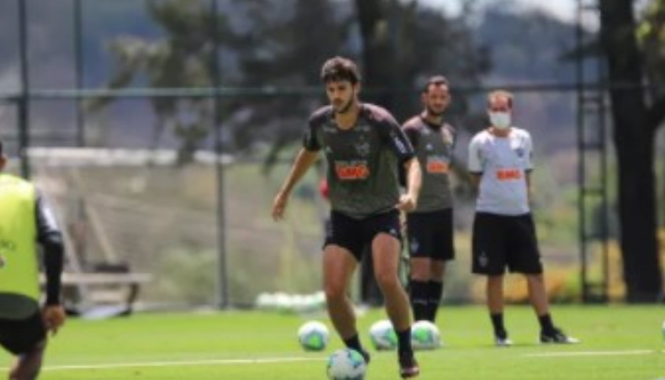

Escalação do Atlético-MG:
Sampaoli encerra preparação para
encarar o Grêmio, Réver é dúvida
Zagueiro volta a treinar ao lado dos companheiros, mas pode ser preservado após fraturar e
operar o nariz na
semana passada; Mariano e Guga "brigam" na lateral direita
A escalação de Jorge Sampaoli para o Atlético-MG encarar o Grêmio fica ainda mais difícil de traçar, já que o time não tem novos desfalques no duelo de sábado, às 21h (de Brasília), no Mineirão. Sampaoli deve mudar peças, e a única dúvida é se Réver terá condições de ser escalado.
Ele, pelo quarto dia seguido, treinou na Cidade do Galo. Num primeiro momento, fez apenas atividades leves, até voltar a ter contato com a bola ao lado dos companheiros. Não é possível afirmar se ele irá pro jogo. Se não for escalado, será substituído por Igor Rabello, que entrou no intervalo contra o Atlético-GO, mas no lugar de Guga.
Por falar no lateral-direito, o jogador está com o lugar ameaçado, com a concorrência de Mariano, que deve pintar na posição. No meio de campo, o armador Nathan é cotado para ser titular, já que participou como suplente nos últimos jogos, após superar lesão na coxa. Nathan concorre com Alan Franco para fechar o meio de campo com Allan e Jair, os volantes de maior marcação.
No ataque, Keno, em alta após três gols na vitória de 4 a 3 diante do Atlético-GO, tem lugar praticamente garantido, assim como Eduardo Sasha. Na ponta direita, Savarino também deve continuar, tendo Marrony com "rival" de posição.